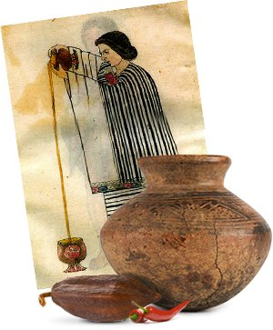
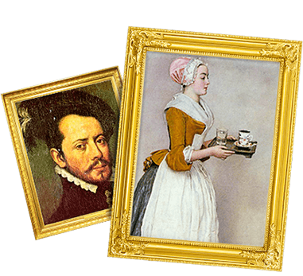
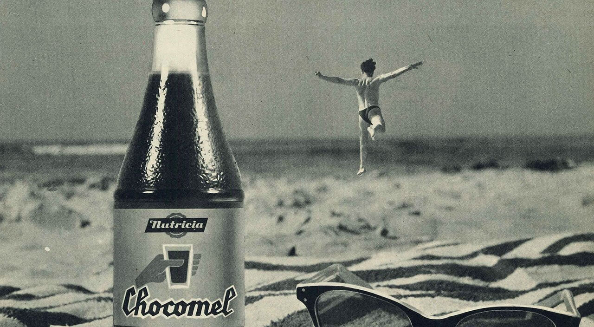
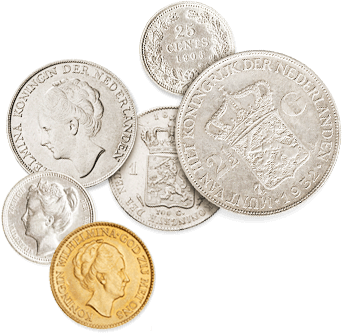

de eerste chocomel
250 B.C.
Dit had je misschien niet verwacht maar de eerste chocolademelk was geen Chocomel en werd ook niet gemaakt op basis van melk! Het waren de Maya’s die cacao bewerkten tot pasta en deze mengden met water en chili. Ook de naam was anders; dit drankje was (nog) geen Chocomel maar werd xocoatl genoemd.
godendrank
1400

Xocoatl had een verkwikkend effect en werd daarom gezien als godendrank. Er is door de jaren heen eigenlijk dus niet zoveel veranderd ;) Hierdoor was cacao heel waardevol en werd het zelfs gebruikt als betaalmiddel in de ruilhandel met de Azteken.
cacao gaat over de grens
1527
Ontdekkingsreiziger Hernán Cortés belandde in 1519 in Mexico. Daar ontdekte hij wat de Maya’s met cacao konden en deden en nam het mee naar Spanje. Tot de zeventiende eeuw lukte het om cacao verborgen te houden voor de rest van Europa.
Het ontstaan van chocomel
hoofdstuk 2
ten minste houdbaar tot...
1932
Er was al veel veranderd sinds de Maya’s xocoatl introduceerden. Goed woord trouwens voor een ouderwets spelletje galgje, xocoatl. Extra lekker onder het genot van een Chocomel ;). Waar Van Houten er voor zorgde dat chocolademelk voor meer mensen gemaakt kon worden, ontdekten de knappe koppen bij Nutricia een manier om chocolademelk langer houdbaar te maken. Ze noemden de chocolademelk Melcola en zorgden dat het drankje ook in de horeca werd geïntroduceerd.
melcola, niet de enige echte
1936
De naam Melcola was al in gebruik, waardoor de chocolademelk als Chocomel werd geïntroduceerd. Deze naam moest nog worden afgekocht voor 50 gulden, wat voor die tijd heel veel geld was. We hebben er dus iets voor over moeten hebben, maar dan ben je ook wel de enige èchte ;).